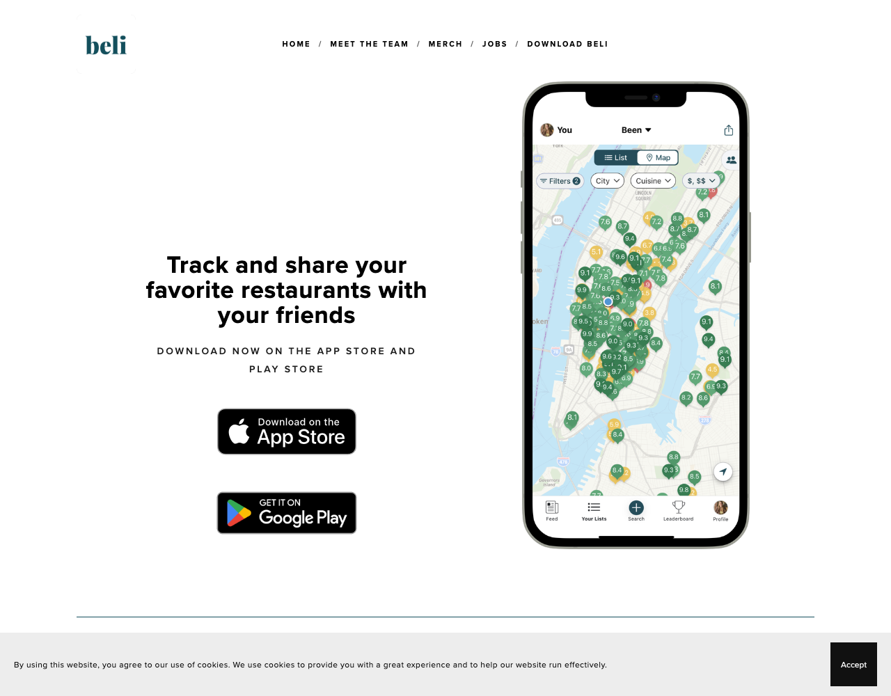
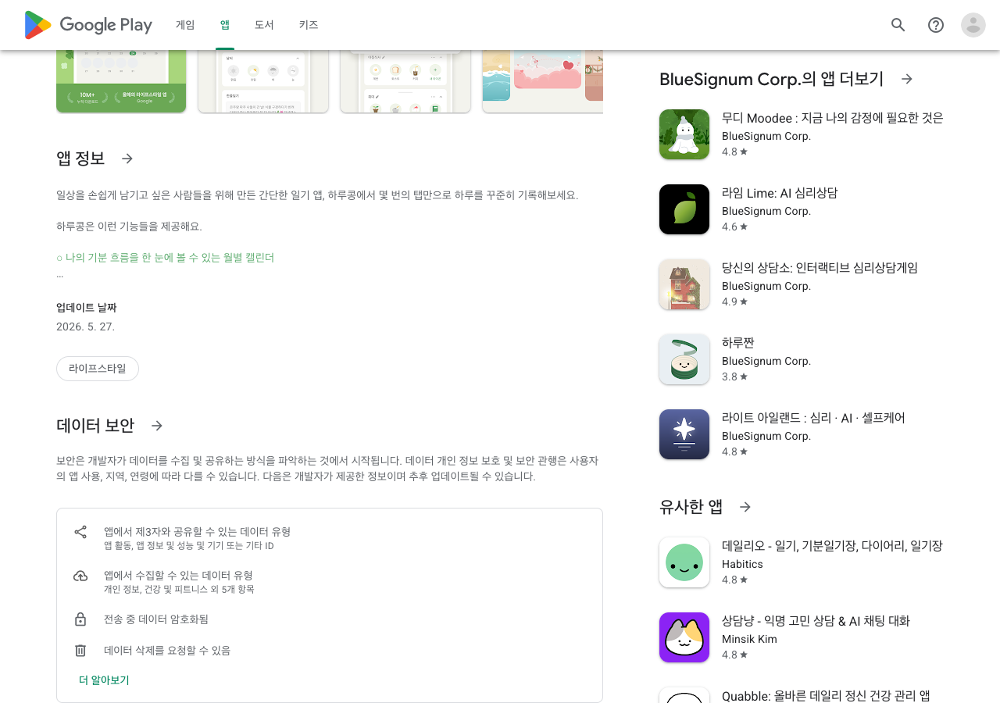
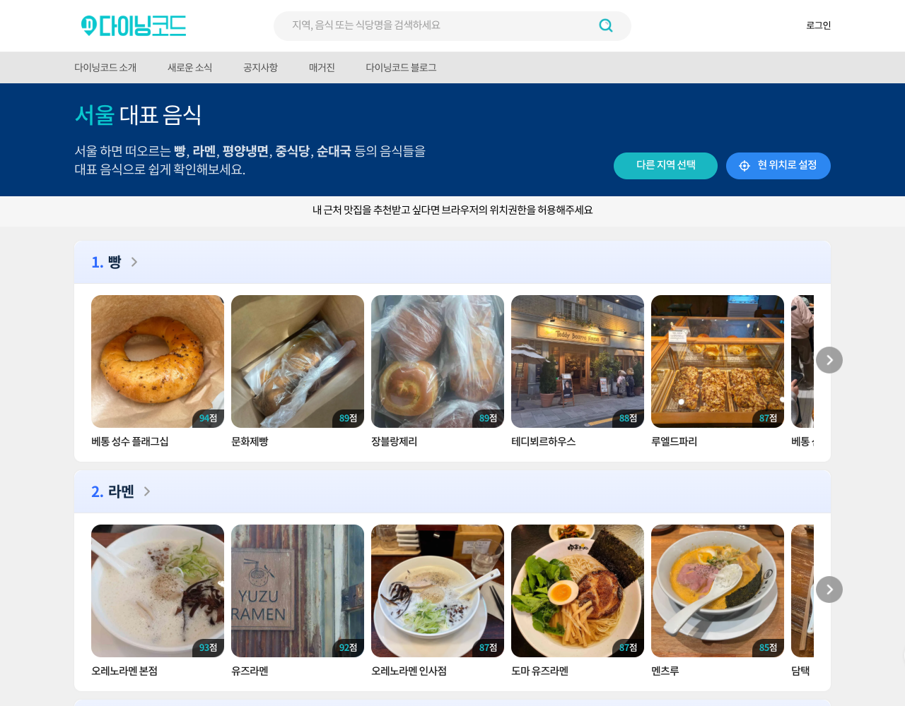

🧪 사-피 기능 벤치마크 — 실제로 베껴올 무브
2026-06-03 · 앱 나열이 아니라, 목표별 "구체적 무브 + 실화면 증거 + 사-피 적용 + 우선순위"
📌 전원 콜드스타트 → 기능을 통째 따라 만드는 게 아니라, 검증된 무브만 골라 핵심 루프를 먼저 돌린다.
포커스 A · 기능 1
로깅 연계 게이미피케이션
목표: 로깅 장벽을 낮추고, 재미·리워드를 높여 기록 빈도/리텐션을 끌어올린다.

MOVE 1
진입은 0초 — "발도장" 체크인
P0실화면(모두의): 업소 상세의 "여기 다녀왔어요" 버튼을 한 번 누르면 끝. 온도·메모 입력 없이 방문 사실만 남긴다.
사-피 적용: 30초 숏로그와 별개로 0초 발도장을 둔다. 진입은 원탭, 디테일(온도·세트)은 나중에 선택적으로 채우게.
난이도 低 · 위치 기반 원탭 — 가장 먼저 막힌 "기록 시작" 마찰을 푼다


MOVE 2
기록을 '점수·순위'로 되돌려준다
P1실화면(모두의 랭킹 · Beli): 모두의는 조회·공유·평점·리뷰로 업소 랭킹을 만들고, Beli는 방문지를 둘씩 비교해 개인 점수(0~10)로 환산한다. 기록이 "결과물"로 돌아오니 더 쌓고 싶어진다.
사-피 적용: 방문 사우나를 비교해 "내 인생 사우나 Top"을 자동 생성. 로그가 곧 나만의 랭킹이 된다.
난이도 中 · 비교 UX 설계 필요

MOVE 3
체크인·기여에 보상이 붙는 리워드 체계
P1실화면(모두의 마이): 방문/체크인 횟수에 뱃지가 걸려 있다(첫발걸음·단골·마니아…). 단 "방문 수"만 세는 얕은 구조.
사-피 적용: 보유한 340칭호를 단순 마일스톤이 아니라 행동연동(새 시설유형·새 지역·새 온도대 도전)으로 재설계 → 모두의보다 한 단계 깊게, 탐험을 유도.
난이도 中 · 칭호 시스템은 이미 보유, 트리거만 재설계


MOVE 4
성장·회고를 눈에 보이게
P2실화면(사사사 · 하루콩): 사사사는 누적 시간·칼로리로 "성장하는 나"를 보여주고, 하루콩은 월별 기분 캘린더로 한눈에 시각화한다. 시각화 자체가 리워드.
사-피 적용: 월별 토토노우 히트맵 + 연말 "올해의 사우나 리포트"(Strava Wrapped식).
난이도 中 · 통계/시각화 컴포넌트
🎯 무엇을, 어떤 순서로
P0 발도장 체크인(진입 0초) → P1 점수·랭킹화 + 행동연동 리워드 → P2 성장 시각화·연말 리포트. 이 순서로 "쉽게 시작 → 쌓을 맛 → 돌아볼 맛"을 완성한다.
⏸ 후순위(밀도 확보 후): 소셜 인정(Strava kudos)·친구 비교 — 유저가 모이기 전엔 빈 화면이라 콜드 단계엔 개인 리워드부터.
포커스 B · 기능 2a
사우나 지도 개선
목표: 지도 발견을 메인으로, DB·사진·후기·블로그를 끌어와 정보 밀도를 높인다.


MOVE 1
지도 위에서 '사우나만의 조건'으로 거른다
P0실화면(이키타이 vs 모두의): 이키타이는 온도·외기욕·스토브까지 시설 스키마로 거르는데, 모두의 필터는 "종류·지역·사우나실 유무"뿐. 여기가 '그냥 지도'와의 결정적 차이.
사-피 적용: 이미 보유한 시설칩(노천·냉탕·24시·타투)을 지도 위 필터로. "노천탕 되는 24시 어디?"에 지도가 바로 답한다.
난이도 中 · 스키마는 보유, 지도뷰에 연결 — 차별화 1순위

MOVE 2
'지금 영업중'을 첫 화면에
P1실화면(사우나데이): 거리순 카드에 실시간 영업중 배지가 붙는다. "지금 갈 수 있는 곳"이 즉시 보인다.
사-피 적용: 영업중 토글을 기본 진입점으로. 영업시간 자체는 카카오·네이버에 위임(모두의 패턴)해 운영비 없이 최신성 확보.
난이도 中 · 영업시간 소스(외부 위임)

MOVE 3
후기·사진 콜드스타트를 외부에서 채운다
P1실화면(다이닝코드): 블로그 빅데이터를 집계해 DB·랭킹을 자동 구축하고, 도착하면 사진까지 자동 매칭한다. 유저가 안 써도 콘텐츠가 채워진다.
사-피 적용: 네이버 블로그/플레이스 연동으로 후기·사진 자동 보강 + 로그 첨부사진을 장소에 자동 연결(UGC 축적). 콜드스타트 완화의 핵심 카드.
난이도 中~高 · 외부 API·집계 파이프라인
MOVE 4
친구·트라이브 지도 레이어
P2실화면(Beli): "가본 곳 / 가고싶은 곳"을 지도로 관리하고 친구가 간 곳을 겹쳐 본다. 발견이 곧 소셜.
사-피 적용: 지도에 트라이브·친구 레이어 — 같은 트라이브가 간 곳, 친구가 찜한 곳.
난이도 中 · 소셜 그래프 필요(후순위)
🎯 무엇을, 어떤 순서로
P0 시설칩 지도 필터(차별화의 핵심) → P1 영업중 + 블로그/사진 자동 보강(콜드 완화) → P2 친구·트라이브 레이어. 커버리지 '양'은 모두의·사우나데이와 경쟁하지 말고, '사우나 전용 조건 + 외부 보강'으로 질에서 이긴다.
포커스 B · 기능 2b
큐레이션 리스트 사용성 · 컨텐츠 확대
목표: 리스트 생성 마찰을 낮추고, 발견 진입점과 콘텐츠 공급을 키운다.

MOVE 1
경쟁 공백 확인 — '진짜 큐레이션'은 무주공산
P0 전략실화면(사우나데이): "올해의/호텔/대형…" 테마 리스트처럼 보이지만 실제론 업종·설립연도 필터 결과다. 사람이 엮은 큐레이션은 아무도 안 하고 있다.
사-피 적용: "유저 크리에이터 큐레이션 + 구독"(SA-LIST)으로 비어 있는 자리를 선점. 이게 통합 전략의 차별 축.
전략적 포지셔닝 — 경쟁 공백 확인됨
MOVE 2
콜드 공백은 에디토리얼 Top리스트로 즉시 채운다
P1실화면(다이닝코드): "전국 베이글 Top100"식 에디토리얼 랭킹 리스트가 검색·발견 유입을 끈다. 유저가 없어도 콘텐츠가 선다.
사-피 적용: SA-PI FEATURED로 "전국 노천탕 Top", "도쿄 사우나 투어" 같은 어드민 큐레이션을 시드로.
난이도 低 · 어드민 큐레이션(이미 계획)
MOVE 3
'저장 = 큐레이션'으로 생성 마찰을 없앤다
P1실화면(Beli · 참고 핀터레스트): 리스트를 "만든다"는 부담 없이, 가고싶은 곳을 저장하다 보면 리스트가 된다. 리스트가 발견의 메인 진입점.
사-피 적용: 인스타식 저장을 그대로 큐레이션 입구로 — 모이면 자동 리스트화를 제안.
난이도 低~中 · 저장 UX는 이미 보유
🎯 무엇을, 어떤 순서로
P0 진짜 유저 큐레이션 공백 선점(포지셔닝) → P1 에디토리얼 Top리스트로 콜드 공백 채움 + 저장=큐레이션으로 마찰 제거.
⏸ 후순위: 리스트 소셜화(좋아요·댓글·공동편집 — Letterboxd식)·알고리즘 PICKS(Spotify식)는 유저·밀도 확보 후.
실화면 출처: Playwright 실측 + 유저 캡처(2026-06-03) — 모두의(체크인·랭킹·마이·필터)·사사사·이키타이·사우나데이·다이닝코드·Beli·하루콩.
Strava(소셜)·Letterboxd·Spotify·Pinterest = 로그인월/봇차단으로 실화면 미확보 → 후순위 참고로만 표기. 벨리=Beli(미국 친구추천 식당 랭킹). 망고플레이트 2023.10 폐쇄.